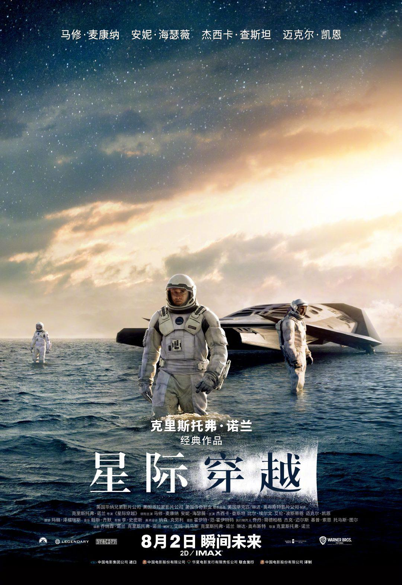

星际穿越

概况
导演: 克里斯托弗·诺兰
编剧: 乔纳森·诺兰 / 克里斯托弗·诺兰
主演: 马修·麦康纳 / 安妮·海瑟薇 / 杰西卡·查斯坦 / 麦肯吉·弗依 / 卡西·阿弗莱克 / 更多...
类型: 剧情 / 科幻 / 冒险
制片国家/地区: 美国 / 英国 / 加拿大
语言: 英语
上映日期: 2014-11-12(中国大陆) / 2020-08-02(中国大陆重映) / 2014-11-07(美国)
片长: 169分钟
剧情简介
近未来的地球黄沙遍野，小麦、秋葵等基础农作物相继因枯萎病灭绝，人类不再像从前那样仰望星空，放纵想象力和灵感的迸发，而是每日在沙尘暴的肆虐下倒数着所剩不多的光景。在家务农的前NASA宇航员库珀（马修·麦康纳 Matthew McConaughey 饰）接连在女儿墨菲（麦肯吉·弗依 Mackenzie Foy 饰）的书房发现奇怪的重力场现象，随即得知在某个未知区域内前NASA成员仍秘密进行一个拯救人类的计划。多年以前土星附近出现神秘虫洞，NASA借机将数名宇航员派遣到遥远的星系寻找适合居住的星球。在布兰德教授（迈克尔·凯恩 Michael Caine 饰）的劝说下，库珀忍痛告别了女儿，和其他三名专家教授女儿艾米莉亚·布兰德（安妮·海瑟薇 Anne Hathaway 饰）、罗米利（大卫·吉雅西 David Gyasi 饰）、多伊尔（韦斯·本特利 Wes B...